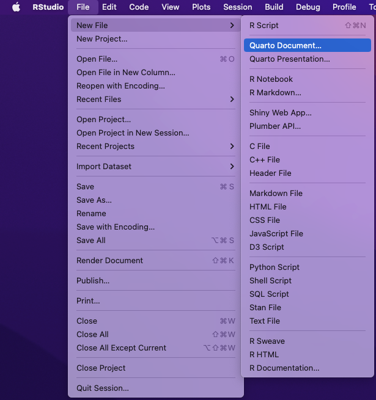
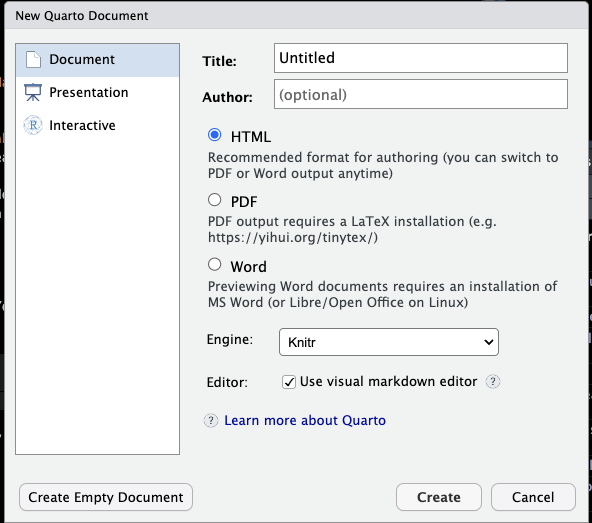

“Quarto is a multi-language, next generation version of R Markdown from Posit, with many new new features and capabilities. Like R Markdown, Quarto uses knitr to execute R code, and is therefore able to render most existing Rmd files without modification.”
Why Quarto?
Seamless integration
Ease of use
More intuitive
Potential of creating dashboards to illustrate statistical analysis undertaken
Setting Up Quarto
To get started with Quarto, you will need to install Quarto. You can do this by here.
Once you have installed the Quarto, you can create a new Quarto document by:
Go to the File menu in RStudio
Select New File > New File > Quarto Document

Choose the document type: Document, Presentation, or Interactive.

Note
A Quarto file is a plain text file with the extension .qmd.
Multi-language Support
The principal languages supported by Quarto are Python, R, Julia, and Observable JavaScript.
Calculate the ratio of bill_depth_mm to bill_length_mm and the area of the bill.
Creating Captivating Stand Alone Documents
Callouts
Using callouts to highlight important information and break up text
Note
Note that there are five types of callouts, including: note, warning, important, tip, and caution.
Tip with Title
This is an example of a callout with a title.
Warning
This is a warning callout
Important
This is a important callout
Collapse Call Outs
Allows you to add more information that is valuable, but may not need to be taking space in the document. collapse="false" will show the content by default.